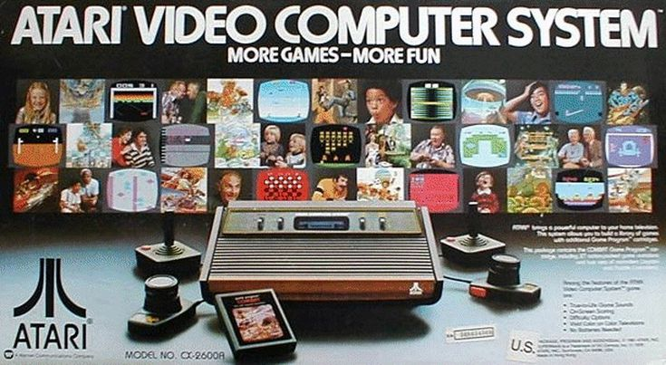

<
Todo un éxito en ventas que impulsó a Atari a la fama e hizo popular los cartuchos intercambiables. Con sólo
128 bytes de memoria RAM, sacó al mercado juegos como Pac-man, Space Invaders, Asteroids, Donkey Kong, o Mario Bros.
Se vendía acompañada de 2 joysticks, 2 controles tipo paddle y
el juego Combat desde 1977 hasta 1983.
La programación de juegos no cesó hasta el año 1989.
>
